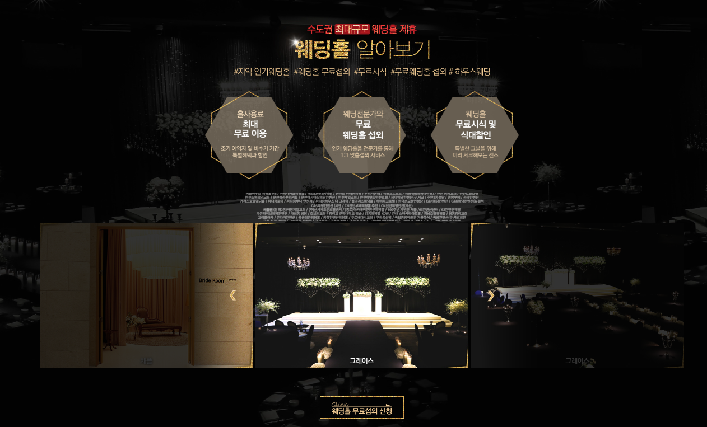
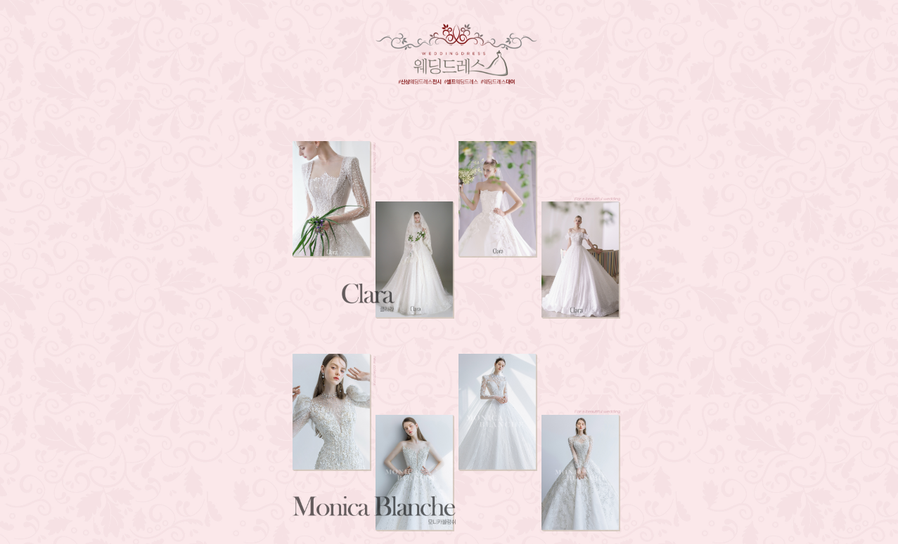
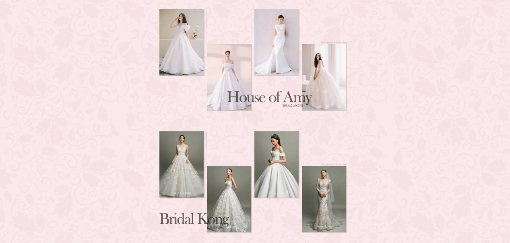
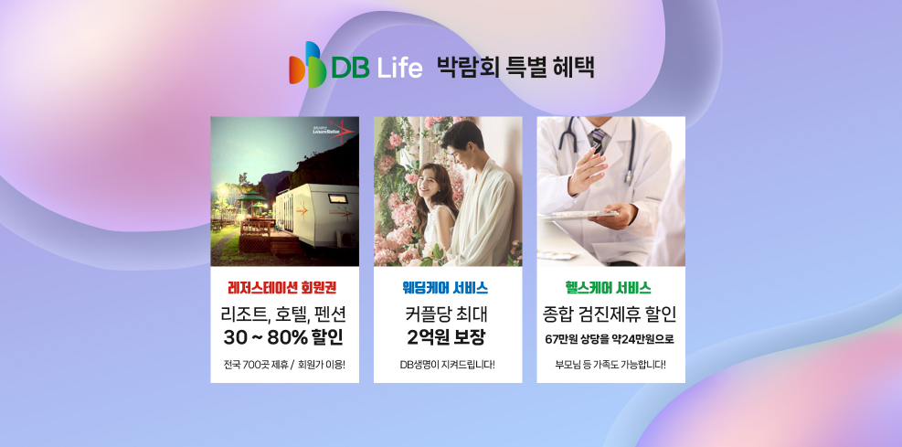

결혼 준비를 시작하면 웨딩홀과 스튜디오, 드레스, 메이크업, 예물과 예복, 혼수, 신혼여행까지 여러 항목을 동시에 알아보게 됩니다. 서울 세텍 웨딩박람회를 방문하기 전 희망 예식 시기와 지역, 예상 하객 수, 전체 예산을 정리해두면 필요한 상담을 효율적으로 받을 수 있습니다. 이 페이지에서는 박람회에서 비교할 항목과 방문 준비, 상담 순서, 계약 전 확인사항과 사전신청 방법을 자세히 안내합니다.
희망 시기, 지역, 하객 수와 전체 예산 범위를 먼저 정리하세요.
기본 가격만 보지 말고 실제 포함 서비스와 추가금을 확인하세요.
일정 변경, 계약 취소, 환불 기준을 계약서에서 확인하세요.
서울 세텍 웨딩박람회에서는 무엇을 확인할까요?
웨딩박람회에서는 결혼을 준비하면서 필요한 여러 분야의 정보를 한자리에서 살펴보고 비교해볼 수 있습니다.
예식 일정과 지역, 예상 예산을 기준으로 필요한 항목을 정리하면서 자신에게 맞는 결혼 준비 방향을 알아보는 데 활용할 수 있습니다.
여러 업체의 상담을 같은 날 받아볼 수 있어 구성과 비용을 비교하기 편리하지만, 현장에서 들은 설명만으로 바로 결정하기보다는 상담 내용을 메모하고 두 사람이 중요하게 생각하는 기준에 맞춰 다시 비교하는 과정이 필요합니다.
많은 상담을 받는 것보다 자신에게 필요한 분야를 먼저 정하고, 같은 기준으로 조건을 비교하는 것이 중요합니다.

웨딩홀부터 스드메까지 필요한 항목을 비교해보세요
결혼 준비에는 웨딩홀과 스드메뿐 아니라 예물과 예복, 혼수 등 여러 분야의 선택이 필요합니다. 각각의 구성과 조건을 확인하면서 비교해보는 것이 좋습니다.

💒 웨딩홀
희망하는 예식 지역과 일정, 예상 하객 수를 기준으로 조건을 비교해보세요.
👰 스드메
스튜디오와 드레스, 메이크업의 구성과 포함 항목을 확인해보세요.
💍 예물·예복
원하는 디자인과 필요한 품목, 예상 예산을 미리 정리해보세요.
🏠 혼수
신혼집에 필요한 가전과 가구의 우선순위를 정해 비교해보세요.
| 웨딩홀 | 예식 가능일, 최소 보증 인원, 식대, 대관료, 주차와 부대시설을 확인합니다. |
|---|---|
| 스튜디오 | 촬영 콘셉트, 의상 수, 원본 제공, 수정본 수량과 추가 비용을 비교합니다. |
| 드레스 | 선택 가능한 등급, 피팅 횟수, 추가금이 발생하는 드레스 범위를 확인합니다. |
| 메이크업 | 본식과 촬영 메이크업 포함 여부, 담당자 지정과 추가 비용을 확인합니다. |
| 예물·예복 | 상품 구성, 디자인 변경, 제작 기간, 수선과 사후관리 조건을 비교합니다. |
| 혼수·신혼여행 | 필요 품목과 일정, 취소 규정, 포함 사항을 기준으로 비교합니다. |
방문 전에 일정과 예산을 미리 정리해보세요
여러 업체의 상담을 한자리에서 받게 되면 다양한 조건과 선택지를 접하게 될 수 있습니다. 방문 전에 자신이 원하는 기준을 미리 정리하면 필요한 정보를 비교하기가 더 편리합니다.


서울 세텍 웨딩박람회 상담을 효율적으로 진행하는 순서
현장에서는 여러 분야의 상담을 연속으로 받게 될 수 있으므로 우선순위를 정하지 않으면 비슷한 설명을 반복해서 듣거나 중요한 질문을 놓칠 수 있습니다. 두 사람이 가장 먼저 결정해야 하는 웨딩홀과 예식 일정을 기준으로 상담 순서를 정하는 것이 좋습니다.
업체명, 기본 가격, 포함 항목, 추가금, 혜택 적용 조건과 상담 담당자를 같은 형식으로 기록하면 비교하기 쉽습니다.
계약 전에는 포함 항목과 추가 조건을 확인하세요
웨딩 관련 상품은 기본 가격만 비교하기보다 실제로 포함되는 서비스와 선택 옵션에 따른 추가 비용까지 함께 확인하는 것이 좋습니다.
일정 변경과 계약 취소 조건 등도 미리 살펴보고 여러 조건을 충분히 비교한 뒤 결정해보세요.
현장 혜택이 강조되더라도 적용 조건과 유효기간을 확인하고, 구두로 안내받은 내용이 계약서나 신청서에 정확히 기재되었는지 살펴보세요. 계약금과 잔금 납부 일정, 업체 변경 시 발생하는 비용도 함께 확인해야 합니다.
웨딩 상품 비용은 같은 기준으로 비교하세요
웨딩 상품은 기본 금액이 비슷해 보여도 포함되는 서비스와 선택 가능한 범위가 달라 최종 결제금액에서 차이가 생길 수 있습니다. 월 납부액이나 할인 금액만 보기보다 실제로 지불해야 하는 전체 금액을 기준으로 비교하는 것이 좋습니다.
| 기본 금액 | 처음 안내되는 패키지 금액과 필수 포함 항목을 확인합니다. |
|---|---|
| 선택 추가금 | 드레스 등급, 촬영 옵션, 원본, 메이크업 담당자 지정 등 추가금 항목을 확인합니다. |
| 혜택 조건 | 당일 계약, 특정 카드, 제휴 업체 이용 등 혜택 적용 조건을 확인합니다. |
| 변경 비용 | 예식일 변경, 업체 교체, 상품 구성 변경 시 발생할 수 있는 비용을 확인합니다. |
| 취소·환불 | 계약금 환불 여부와 시기별 위약금 기준을 계약서에서 확인합니다. |
방문 전 사전신청 정보를 확인해보세요
서울 세텍 웨딩박람회 방문을 계획하고 있다면 행사 관련 안내와 사전신청 내용을 미리 확인해보는 것이 좋습니다.
실제 행사 일정과 운영 방식, 참여 업체 및 제공되는 내용은 행사 상황에 따라 변경될 수 있으므로 신청 페이지의 안내를 확인한 뒤 방문을 준비해보세요.
